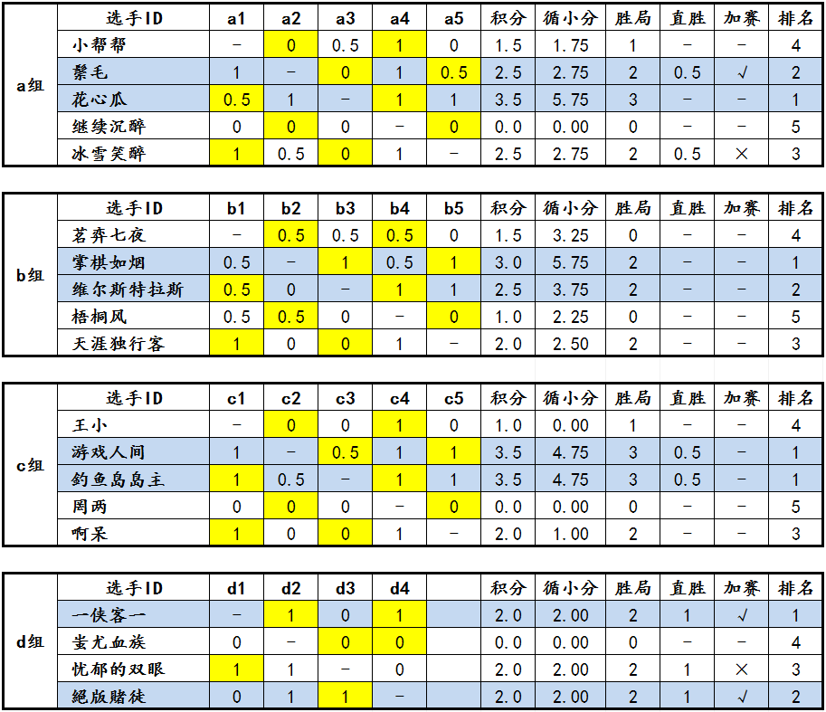

“西北狼”杯第一届博弈规则论坛战于2013年8月10日上午8:00全部结束！
自7月6日起发布对局，7月10日0:00起正式开始计时，历时超过一个月。
完成正赛对局36局（a、b、c组各10局，d组6局），加赛对局5局（a组2局，d组3局），共计41局对局。
黑胜16局，白胜18局，和棋7局。
预赛完整赛果见下表：黄色底色表示先手方，蓝色底色表示决赛晋级名额。

最终确定的晋级决赛名额为：
a组：a2 花心瓜（1位，3.5），a3 鬃毛（2位，2.5）
b组：b2 掌棋如烟（1位，3.0）、b3 维尔斯特拉斯（2位，2.5）
c组：c2 游戏人间（并列1位，3.5）、c3 鱼岛岛主（并列1位，3.5）
d组：d1 一侠客一（1位，2.0）、d4 ^版徒（2位，2.0）
预赛的积分排名不会带入决赛阶段。
预赛阶段奖励已经全部发放完毕。
至8月14日零时，预赛结果确认完毕，论坛战将正式进入决赛阶段。
全部对局均已上传至论坛棋谱库：2013年爱五子棋网博弈规则论坛战
====================
a组：
花心瓜3胜1和可谓一往无前，但另一个晋级名额却让冰雪笑醉和鬃毛两人拼得头破血流。但在后来的加赛中，冰雪笑醉策略失误，鬃毛仅有17手即逼其签订城下之盟，若即若离的冰雪笑醉在另一盘棋中也未做太多抵抗，超过翻盘手数后也同时超时，遗憾退出了决赛的争夺。
b组：
本组的对局十分胶着，选手之间的水平差异也较小，战况激烈！最低分1分、最高分3分也是在其他小组中没有出现过的状况。最终，掌棋如烟和维尔斯特拉斯还是凭借实力牢牢把握住了前两名的位置。本组也是唯一一个各选手积分均不相同的组别。
c组：
游戏人间的观望态度似乎导致整个小组的对局进程极为缓慢。但很快，这种慢节奏的危机和不安感就被游戏人间、鱼岛岛主二位选手的强横实力所取代，最终两人对外取得三连胜后握手言和，共同以3胜1和的战绩并列第一晋级决赛。其他三位选手之间的胜负似乎只是成了点缀，唯一值得一提的是罔两以不可思议的四连超时退出了竞争。
d组：
除了蚩尤血族一路连败早早退出外，在赛前呼声很高的^版徒、忧郁的双眼却被一侠客一这个“搅局者”拦住了去路。一侠客一强力战胜^版徒后使得预赛出现循环套，之后的加赛小循环与预赛如出一辙：最终的一局，一侠客一背负着巨大的压力再次战胜^版徒获得最后一个晋级名额！在正赛阶段即早早成为旁观者的忧郁的双眼在加赛阶段同样如此，最终他只能在决赛圈外看着另外两位选手的激烈厮杀了，真是遗憾！